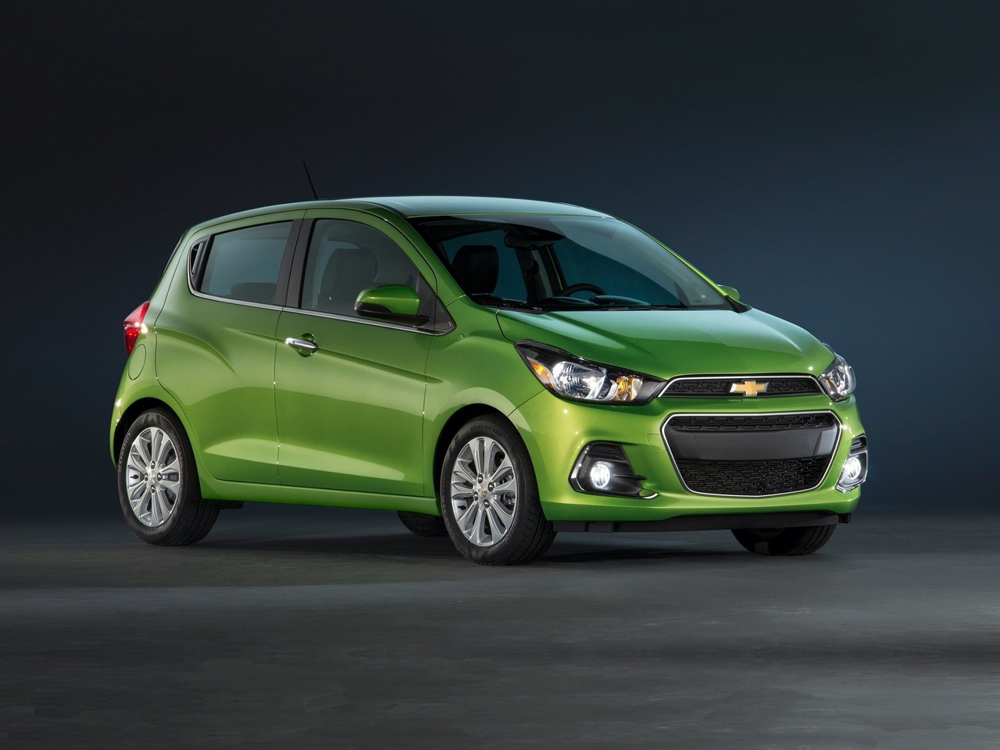
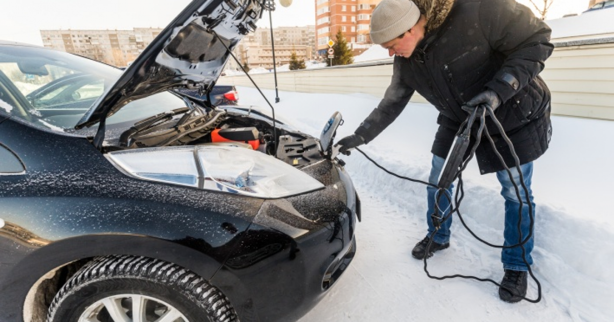

Как сэкономить на бензине
 FISHKINET Новое Новое Парк с павлинами на Золотом Побережье Австралии Автор: Илья Лисс Как Проня Прокоповна всё-таки вышла замуж. Судьба актрисы Маргариты Криницыной Автор: Димон Запорожцы пишут письмо турецкому султану, или как турецкий шайтан получил ответ от Тараса Бульбы Автор: picturebymaslo В нью-йоркской подземке обнаружили тайную мужскую "берлогу" Автор: TapokSudby Зверушки, которые могут давать мастер-классы о том, как найти самое удобное место в мире Автор: Димон БОЛЬШЕ ПОСТОВ Сообщества Сообщества Багровые реки: на винодельне лопнула цистерна с вином Сообщество: Новости со всего Мира "Ты уже не король": герои детской передачи в Белоруссии разыграли сцену смены власти Сообщество: Политика Зима в Альпы пришла на месяц раньше обычного Сообщество: Новости со всего Мира Кто бы мог подумать, что люди бывают так счастливы в день развода Сообщество: Юмор Киллер спас бывшего футболиста от жены Сообщество: Истории из жизни БОЛЬШЕ ПОСТОВ СОЗДАТЬ СООБЩЕСТВО ТЕХ. ПОДДЕРЖКА СООБЩЕСТВ ВСЕ СООБЩЕСТВА Видео Основное Приколы Животные Факты Своими руками Лучшее за неделю Лучшее за месяц Смелая женщина прокатилась на крыле планера Автор: Mr.Adamson О везении и пользе шлема Автор: Mr.Adamson Кража мотоцикла пошла не по плану Автор: Picard Как скучающий британский охранник через барьер прыгал Автор: mindflixx Уличный грабитель пожалел, что вырвал сумку из рук женщины Автор: 3dmonkey БОЛЬШЕ ПОСТОВ Ниндзя в отставке? Автор: Picard Мужчина примерил лица знаменитостей Автор: Forestdude Громко и эффектно вошла в здание офиса Автор: Mr.Adamson Оператор замечтался и смутил телеведущую Автор: mindflixx Дорожный рабочий перенес девочку на руках через горячий асфальт Автор: Mr.Adamson БОЛЬШЕ ПОСТОВ Спасение пса, угодившего в мазутную яму Автор: Alex Chebrikov Пёс в последний момент передумал прыгать в воду Автор: Forestdude Крупный попугай сел на голову футболистке сборной Бразилии Автор: Alonso Увлекшегося ловлей рыбы медведя не испугали даже звуки выстрелов Автор: Forestdude Пожилая пара помогла косуле выбраться из бетонной ловушки Автор: Alonso БОЛЬШЕ ПОСТОВ Почему перед сном стоит закрывать двери в комнатах Автор: Forestdude 21-летняя девушка откровенно рассказала о трудностях жизни с большой грудью Автор: Alonso Функционирование ДНК показали в удивительной анимации Автор: Кот шашлык Заложник Автор: TUKUTELA-сепар Воины без смерти Автор: TUKUTELA-сепар БОЛЬШЕ ПОСТОВ Диорама со взрывом атомной бомбы Автор: Кот шашлык Самый бюджетный беспилотник Автор: Picard Самодельная радиоуправляемая подводная лодка из Lego Автор: Picard Миниатюрный меч из ржавого гвоздя Автор: Mr.Adamson Горнолыжный курорт во дворе дома Автор: Alonso БОЛЬШЕ ПОСТОВ Тучная женщина эффектно ворвалась в кадр Автор: 3dmonkey Как развязать узел целлофанового пакета Автор: Иван Кемеров Забери столько, сколько сможешь ухватить Автор: Alonso БОЛЬШЕ ПОСТОВ Твори добро: реакция мужчины на то, что возле его гаража катается чужой ребёнок Автор: Alonso Когда очень хотел нарваться на неприятности Автор: 3dmonkey Белка встретила грибника и сломалась Автор: 3dmonkey БОЛЬШЕ ПОСТОВ Ностальгия Ностальгия Наш дорогой Леонид Ильич! Автор: zaCCCPanec Доброе утро Иркутск. 1990 год. Крис Ниденталь в Иркутске и на Байкале Автор: Юганск СССР в 1989 году Автор: Юганск Бобруйск советский. Часть 2 Автор: Сергей Как советский разведчик "Жорж" проник в секретную атомную лабораторию США Автор: Димон БОЛЬШЕ ПОСТОВ Новости Новости Армения с Азербайджаном делят Нагорный Карабах: в республике объявлено военное положение Автор: Result Под Харьковом разбился военный Ан-26 Автор: Dionysus Мультику про славянский киберпанк «Киберслав» быть! Автор: HomMiss Племянник наркобарона нашел неожиданное наследство Автор: Болонка королевы Владимира Путина выдвинули на Нобелевскую премию мира Автор: Dionysus БОЛЬШЕ ПОСТОВ Авто Основное Видео Аварии ДТП Авария дня Тюнинг Электрическая маршрутка в России Автор: Иван Кемеров Как водитель приоры напал с топором Автор: Марат Измайлов Автовсячина Автор: БрОдЯгА Все гениальное - просто! Как в одиночку толкать машину? Автор: Vossen Заброшенный Ferrari, когда-то принадлежавший саудовскому принцу Автор: Сергей БОЛЬШЕ ПОСТОВ Российский космонавт заснял группу из пяти неизвестных объектов Автор: Лан не урчи Эффектная наклейка на автомобиль Автор: mindflixx Американка не позволила полицейскому автомобилю попасть в ДТП Автор: Forestdude Эффектная авария во время полицейской погони Автор: Forestdude Кокетливый неадекват скакал по автомобилям на улицах Саратова Автор: Picard БОЛЬШЕ ПОСТОВ Декан московского вуза запретил вызывать МЧС для застрявших в лифте студентов Автор: Dixi_Mole БОЛЬШЕ ПОСТОВ Мастер-класс по бесплатному проезду платных участков автодорог Автор: Johnny «Пшеничное» ДТП: в Ростовской области «КамАЗ» потерял прицеп с зерном Автор: Johnny Авария дня. Пенсионерка устроила ДТП с пятью машинами Автор: Johnny Автомобиль Росгвардии сбил женщину на пешеходном переходе Автор: Johnny Байкерша из Ярославля врезалась в открытую дверь авто - момент столкновения попал на видео Автор: Result БОЛЬШЕ ПОСТОВ Авария дня. Самая надежная подруга с мотором Автор: Johnny Авария дня. В Севастополе произошло ДТП с машиной скорой помощи Автор: Johnny Авария дня. В Удмуртии пьяная автомобилистка в возрасте устроила ДТП Автор: Johnny Авария дня. Дрифт на спортивном BMW закончился гибелью трех человек Автор: Johnny БОЛЬШЕ ПОСТОВ Touring Superleggera Aero 3 — переделанный Ferrari в стиле стримлайнеров 1930-х Автор: RedBull Забудьте о кроссоверах-кабриолетах и посмотрите на этот пикап Chevrolet Colorado Автор: RedBull Диагноз неутешителен: "врум-врум" и "эродондодон" головного мозга. Всё о странных выхлопных Автор: Никифоридис Тюнингованный Mercedes-AMG S63, как способ обратить на себя внимание Автор: RedBull На продажу выставили Brabus E V12 — один из самых быстрых седанов в мире Автор: RedBull БОЛЬШЕ ПОСТОВ Я Автор Австралийский Брисбен. Центр города. Продолжение Автор: Илья Лисс Еще немного австралийских козявок Автор: Илья Лисс Пляж Бондай-бич в Сиднее, Австралия Автор: Илья Лисс В дождевом лесу в горах штата Queensland, Австралия Автор: Илья Лисс Птицы, которых можно встретить у порога дома в Австралии Автор: Илья Лисс БОЛЬШЕ ПОСТОВ Ещё Новое Сообщества Видео Ностальгия Новости Авто Я Автор Фишкина солянка Чистилище Смешные картинки Антифишки Солянка для майдана Ад'ок Демотиваторы Гифки Еда Спорт Кубики Военное Фото Книги Анекдоты Дикая природа Игры Путешествия Кино Лица проекта Юмор Селфи для фишек Факты FAQ Животные Закрыли доступ? Истории Лонгриды Тех.поддержка Девушки Предложения проекту Тесты ИнфоFishki О проекте Реклама на фишках Firework Трансляция из заповедника Перейти на новый дизайн и отключить рекламу ru en X Только авторские посты в ленте #Яавтор поделиться 126 ещё пост Как сэкономить на бензине Станьте частью первой в мире распределенной суперсети и... Армения с Азербайджаном делят Нагорный Карабах: в республике... Как бизнесмен дорогу арендовал и что из этого вышло В Якутии обнаружили ржавеющий личный самолет Хрущева Прикольные и смешные картинки 15 фотографий для тех, кто думает, что видел в жизни всё Прикольные и смешные картинки Виктор Ильичев: отъезд в США стал для него дорогой в один конец Борис Соболев : «Теле-экстрасенсы – пример удивительного... Мемы из уст Сенсея История Зиновия Гердта: шестнадцатилетний "король" Вдруг, откуда ни возьмись, появился Фотоподборка Как «умирает» техника по всему миру Воронежская школьница показала разницу между учебником и заданием... Просто гифки, всякие и разные Человек-торпеда или побег на акваскутере, история Берндта Боеттгера 22 благодарных питомца, которые обрели счастье в новой семье Доброе утро Иркутск. 1990 год. Крис Ниденталь в Иркутске и на Байкале Новое > Авто zaMKADpride
Как сэкономить на бензине (10 фото)
Автор: zaMKADpride13 апреля 2015 08:21 Метки: авто азс бензин топливо экономия 8770 10 По статистике российских аналитиков, примерно каждый третий россиянин имеет собственный автомобиль. Несмотря на все выгоды, которые мы получаем, владея транспортным средством, уход за ним требует немалых вложений. Отдельной статьей расходов здесь являются неоправданно высокие траты на топливо.
0 Смотреть все фото в галерее Поэтому, в условиях постоянно растущих цен на бензин будет совсем не лишним знать о том, как вы можете здесь сэкономить. Конечно, можно просто пересесть на велосипед или на общественный транспорт, но для тех, кого такое решение не устраивает, мы подобрали десять советов, следуя которым вы можете существенно сократить расходы на топливо. Некоторые из них требуют волевых усилий, а другие – так и некоторой самоотверженности, но поверьте, все они работают.
Оставьте в покое педаль газа
0 Каждый раз, когда вы срываетесь с места в карьер, втопив в пол педаль акселератора, расход топлива вырастает в разы. Чем более резко вы разгоняетесь, тем больше энергии потребляет двигатель. Угадайте, откуда ваш автомобиль берет энергию?
И педаль тормоза тоже
0 Разумеется, вы должны ей пользоваться, чтобы остановится, но если вы знаете, где поворот, доедьте до него по инерции. При резком торможении в цилиндры двигателя подается слишком много топлива, которое тут же преобразуется в тепловую энергию, рассеивающуюся в воздухе. Минимум эффективности, максимум затрат.
Не разгоняйтесь
0 Разогнавшись по пустой дороге до 120 км/ч вы, конечно, доберетесь до пункта назначения быстрее. Но окупит ли эта спешка расходы на бензин? На высоких скоростях вашей машине приходится преодолевать сильное сопротивление встречного воздуха, с которым автомобиль справляется, увеличивая число оборотов, и, следовательно, расходы энергии.
Уберите все лишнее
0 Лишние вещи в багажнике самым недвусмысленным образом мешают вашему желанию сэкономить. Уберите все, что вам не пригодится в машине в ближайшее время: детское кресло, ящик с инструментами, верхний багажник (запаску, учитывая состояние российских дорог лучше оставить). Каждые лишние 45-50 кг веса увеличивают расход на 1-1,5 литра на каждые 100 км.
Выключите электроприборы
0 Включенный кондиционер увеличивает расход примерно на 15%. Таким образом, выключив его, вы будете экономить примерно 2 литра на каждые 100 км. Остальные электроприборы в машине «жрут» немного поменьше. Правда, хотите ли вы жертвовать комфортом в угоду экономии, решите для себя сами.
Старайтесь не ездить в дождь
0 Сопротивление воды под колесами автомобиля не намного меньше сопротивления встречного потока воздуха. А когда эти две силы действуют вместе, об экономии точно можно забыть. Если обстоятельства все-таки вынуждают в ливень выбраться на дорогу, будьте готовы к тому, что за бензин вам придется заплатить больше, чем обычно.
Давление в шинах
0 Очень важно следить за тем, чтобы уровень давления в шинах не слишком отличался от рекомендованного. Если все 4 колеса спустят всего на 0,1 атмосферу – расходы топлива уже вырастают на 2-3%. Кроме того, накачанные шины ключевой фактор безопасной поездки, обеспечивающий оптимальный тормозной путь.
Регулярное техобслуживание
0 Ваш автомобиль напичкан всевозможными датчиками и фильтрами. В частности в нашем вопросе важны три вещи: свечи, воздушные фильтры и моторное масло. Не забывайте регулярно их проверять и менять, или вам так или иначе придется заплатить за свою лень.
Правильно выбирайте бензин
0 Во-первых, время от времени мониторьте цены на всех доступных вам заправках. Привычка заправляться в одном и том же месте может неожиданно сильно ударить по карману. Также имеет смысл попробовать все доступные для двигателя вашего автомобиля сорта бензина и выбрать тот, который будет обеспечивать оптимальное соотношение цены и качества.
Продумывайте маршрут
Избежать пробок и найти оптимальный маршрут вам поможет навигатор. Если вы в принципе знаете, где в вашем городе постоянно образуются заторы, возможно, стоит заранее определить маршрут, поехав по которому вы сэкономите как время, так и топливо.Источник:
Ссылки по теме: Почему дорожает бензин? Ложь СМИ и истинная себестоимость топлива Как получить компенсацию за поломку машины из-за плохого бензина? Террор заправки Федерация автовладельцев заявила о недоливе бензина на 76% российских АЗС Какой срок годности бензина? Топливо, как валюта в постапокалиптическом мире Метки: авто азс бензин топливо экономия Понравился пост? Поддержи Фишки, нажми: 73 44 31Понравилось
31 0 126 Новости партнёров Загрузка... А что вы думаете об этом? 141 комментарий Сначала новые Сначала лучшие Сначала старые Лучший комментарий Скрыть 6k Jecksus 5 лет назад Каждые лишние 45-50 кг веса увеличивают расход на 1-1,5 литра на каждые 100 км.Если у вас легковушка с расходом топлива 7л по трассе, то подсадив 3х пассажиров, она будет кушать на 4-6л больше ??? )))
Вместо 7 потратите 12л на трассе ???
Я думаю что автор сильно ошибается. 14 Ответить • Ссылка • Пожаловаться • Поделиться › Вконтакте Facebook Одноклассники Twitter Google + Показать 1 ответ 12k Главный Говномёт2 3 года назад Я экономлю бензин так-покупаю по 25р/литр у товарища,который тырит его из служебной машины.К сожалению,всего 40-50 л в неделю... 0 Ответить • Ссылка • Пожаловаться • Поделиться › Вконтакте Facebook Одноклассники Twitter Google + 712 AleksT 4 года назад Резюмируя прочитанное нужно продать своё авто??? 1 Ответить • Ссылка • Пожаловаться • Поделиться › Вконтакте Facebook Одноклассники Twitter Google + 5k Валерий 5 лет назад 2 Ответить • Ссылка • Пожаловаться • Поделиться › Вконтакте Facebook Одноклассники Twitter Google + 209 АлександрКурчаков 5 лет назад 50 кг веса добавляет 1-1,5 топлива, что за бред ???? 1 Ответить • Ссылка • Пожаловаться • Поделиться › Вконтакте Facebook Одноклассники Twitter Google + 112 Конь педальный 5 лет назад Так то затраты на бензин лежат совсем в другой плоскости. Можете минусить. Только пусть мне объяснят: Почему во всём мире, с падением цен на нефть бензин подешевел, а у нас не только не подешевел, а ещё дорожает каждую неделю? На западе снова не в чести всякие гибриды. И люди снова смотрят на потребляющие, но мощные машины. И только мы ищем способ сэкономить. 3 Ответить • Ссылка • Пожаловаться • Поделиться › Вконтакте Facebook Одноклассники Twitter Google + 2k Тимофей 5 лет назад Доля правды есть, но... только доля. Я водитель, но к машине отношусь как к средству, обслуживание доверяю знающим людям, благо они рядом. И всё равно у меня появились сомнения:
При резком торможении в цилиндры двигателя подается слишком много топлива, которое тут же преобразуется в тепловую энергию, рассеивающуюся в воздухе - объясните, что имел ввиду автор. Я так понимаю, что при торможении машина газку поддаёт?
Каждые лишние 45-50 кг веса увеличивают расход на 1-1,5 литра на каждые 100 км - тоже сомнительно и отнюдь не ко всем машинам относится.
Включенный кондиционер увеличивает расход примерно на 15% - спорное утверждение. Если сравнить сколько энергии надо на движение машины и на работу кондишина, то 6 к 1 не получится (примерно 100% к 15%).
Так что автор написал всё правильно, но довольно сильно преувеличил. 1 Ответить • Ссылка • Пожаловаться • Поделиться › Вконтакте Facebook Одноклассники Twitter Google + 27k юра 5 лет назад А вообще-если ехать и думать об экономии,то лучше ехать на троллейбусе. 1 Ответить • Ссылка • Пожаловаться • Поделиться › Вконтакте Facebook Одноклассники Twitter Google + 27k юра 5 лет назад Единственный разумный способ экономии-это грамотная езда.Не лететь на красный до последнего,а потом тормозить перед светофором юзом.Я прикалываюсь с таких ездоков.Это сугубо личное мнение. 4 Ответить • Ссылка • Пожаловаться • Поделиться › Вконтакте Facebook Одноклассники Twitter Google + 4k IКS 5 лет назад рука-лицо .
Большей тупости я давно не читал. Искренне рад за тех баранов, которым эти советы пригодились. 2 Ответить • Ссылка • Пожаловаться • Поделиться › Вконтакте Facebook Одноклассники Twitter Google + 3k panama 5 лет назад в таком случае проще продать машину и ездить на метро. 4 Ответить • Ссылка • Пожаловаться • Поделиться › Вконтакте Facebook Одноклассники Twitter Google + 3k panama 5 лет назад ах да, про велосипед. было дело как-то. приехал я на работу , успел, сэкономил. но блин вонял как ссаный веник.... не впечатлило 1 Ответить • Ссылка • Пожаловаться • Поделиться › Вконтакте Facebook Одноклассники Twitter Google + 26k arr123 panama 5 лет назад Если работа постоянная, поставить душевую кабину не проблема!
Я например так и сделал когда сисадминил километров за 10 от дома. Причём на работу докатывал в среднем минут за 20, хотя на такси из 23 минут ни разу не выехал (ехать было в час пик). 0 Ответить • Ссылка • Пожаловаться • Поделиться › Вконтакте Facebook Одноклассники Twitter Google + 1k felstar 5 лет назад Смысл поста: хотите сэкономить-не ездите. 0 Ответить • Ссылка • Пожаловаться • Поделиться › Вконтакте Facebook Одноклассники Twitter Google + 20 Автандил 5 лет назад Как сэкономить на бензине?поставить газобалонное оборудование.Я поставил до подорожания-25 тыщ и пропан-бутан по 15 рублей заправляю. 1 Ответить • Ссылка • Пожаловаться • Поделиться › Вконтакте Facebook Одноклассники Twitter Google + 1k Дмитрий 5 лет назад Как экономить на топливе?
Да поставьте уже свой сарай в гараж!
Если вас так беспокоит экономия топлива...
И нервы в порядке и кошелёк цел!
Лично мне удавалось снижать расход на 2-3 литра.
Но это уже не езда, а мастурбация какая то с крайне сомнительным результатом 4 Ответить • Ссылка • Пожаловаться • Поделиться › Вконтакте Facebook Одноклассники Twitter Google + 11k vostok 5 лет назад Это просто откровение какое то. Автор, ты случайно не тот самый капитан очевидность? 0 Ответить • Ссылка • Пожаловаться • Поделиться › Вконтакте Facebook Одноклассники Twitter Google + 17k Андрей 5 лет назад А как же чудо приборчик, сунул в прикуриватель и 20 процентов сходу 0 Ответить • Ссылка • Пожаловаться • Поделиться › Вконтакте Facebook Одноклассники Twitter Google + 10k STENTON8 Андрей 5 лет назад Я таких пять поставил, вообще не плачу за бензин.... 3 Ответить • Ссылка • Пожаловаться • Поделиться › Вконтакте Facebook Одноклассники Twitter Google + 2k DroFa 5 лет назад самый лучший способ экономии бензина - ПРОДАТЬ АВТО.
все остальное нытье...нет денег на бензин, ставь газ, нет денег на газ - пересаживайся на трамвай и не занимай дороги и так пробок да.К.ера! 1 Ответить • Ссылка • Пожаловаться • Поделиться › Вконтакте Facebook Одноклассники Twitter Google + 7k vit 5 лет назад Насчет кондиционера:
Во-первых, расход если и увеличивается, то незначительно. И уж лучше проехать по жаре с комфортом, чем пропотевшим, но сэкономившим пару-тройку литров. Во-вторых, потеря мощности зависит видимо от машины, потому что например у меня что с кондиционером что без него мощность абсолютно одинакова. По крайней мере по ощущениям. Проверял не раз. 0 Ответить • Ссылка • Пожаловаться • Поделиться › Вконтакте Facebook Одноклассники Twitter Google + 58 Nikolay vit 5 лет назад Бортовой компьютер оценивает включение кондиционера в литр на 100км. Отбор мощности компрессором компенсируется увеличением подачи топлива. 0 Ответить • Ссылка • Пожаловаться • Поделиться › Вконтакте Facebook Одноклассники Twitter Google + 7k vit Nikolay 5 лет назад Мне кажется, экономить на собственном здоровье 1 литр бензина на 100км стоит в одном случае - только если у вас Тесла. Иначе машину лучше вообще не покупать. 0 Ответить • Ссылка • Пожаловаться • Поделиться › Вконтакте Facebook Одноклассники Twitter Google + 3k Slavek vit 5 лет назад ...тем более что отключив кондей на трассе и открыв окно, мы поднимаем расход больше чем закрыв окно и включив кондей 0 Ответить • Ссылка • Пожаловаться • Поделиться › Вконтакте Facebook Одноклассники Twitter Google + 3k Игорь 5 лет назад Переведите на ГАЗ и заправляйтесь в 2 раза дешевле 1 Ответить • Ссылка • Пожаловаться • Поделиться › Вконтакте Facebook Одноклассники Twitter Google + 1k Дмитрий Игорь 5 лет назад Вы чтоооо... ГАЗ же взрывопожароопасный, сушит прокладки да и мощности же жуть сколько теряется!!!
Да и чё я бедный что ли, на газу ездить!!! 1 Ответить • Ссылка • Пожаловаться • Поделиться › Вконтакте Facebook Одноклассники Twitter Google + 11k Вадим 5 лет назад Ездите на велосипеде. 4 Ответить • Ссылка • Пожаловаться • Поделиться › Вконтакте Facebook Одноклассники Twitter Google + 7k MUZSER 5 лет назад Избежать пробок и найти оптимальный маршрут вам поможет навигатор...
Ну ну
1 Ответить • Ссылка • Пожаловаться • Поделиться › Вконтакте Facebook Одноклассники Twitter Google + Показать ещё 45 комментариев (из 112 ) Показать все Показать ещё (из _ ) Все гениальное - просто! Как в одиночку толкать машину? Цитаты Альбера Камю — гениального французского прозаика Верный способ полностью испортить вид Porsche Panamera Loading... Спасение Jeep Wrangler, застрявшего на вершине калифорнийской горы Авария дня. Пенсионерка устроила ДТП с пятью машинами Чем круче джип, тем дальше идти за вертолётом: брошенный Jeep Wrangler на вершине калифорнийской... Станьте частью первой в мире распределенной суперсети и зарабатывайте на этом В заброшенной школе нашли редкие автомобили Автомобиль Росгвардии сбил женщину на пешеходном переходе Авария дня. Смертельное лобовое столкновение в Башкирии Смертельные игры: грузовик сбил ребенка в Иркутской области OUKITEL Sports phone WP8 Pro в продаже с 25 по 29 сентября всего за $120! Авария дня. В ХМАО погиб перебегавший дорогу ребёнок Необъяснимый манёвр: водитель пикапа с прицепом вырулил на встречку в Венгрии Великий и опороченный: интересные факты о Trabant Охранник разбил стекло водителю, попытавшемуся проскочить Дворцовый мост перед разводкой Подборка автомобильных гифок Подборка автомобильных приколов Chrysler New Yorker Town & Country 1958 года выпуска больше 50 лет простоял в гараже Мастер-класс по бесплатному проезду платных участков автодорог Mercedes-Benz Renntransporter: быстрый перевозчик гоночных автомобилей Фиолетовый красавец: тщательно отреставрированный Dodge Challenger T/A 1970 Авария дня. Самая надежная подруга с мотором «Пшеничное» ДТП: в Ростовской области «КамАЗ» потерял прицеп с зерном ✖ Станьте частью первой в мире распределенной суперсети и зарабатывайте на этом 15 способов экономии бензина Очередь на АЗС в Минске Террор заправки Тестирование качества бензина на московских заправках Как получить компенсацию за поломку машины из-за плохого бензина? zaMKADpride
Автор, добавь ссылку на свой блог/страницу/профиль и получай аудиторию!
322791
Другие посты автора Популярное 319 319 9 37 15 небанальных сооружений со всего мира, способных удивить 336 336 5 62 «Боярыня Морозова» Сурикова, или как сдвинуть сани на картине. Рассматриваем детали Набирающие популярность 4 4 0 6 Отдых осенью в Сочи 3 3 0 3 Художник совместил реальность с фантазией Станьте частью первой в мире распределенной суперсети и зарабатывайте на этом Нашли ошибку? Выделите
и нажмите CTRL+ENTER Топ сообществ авторов вериф. авторов сообществ Весь топ За неделю За месяц Весь топ Юмор 2405 2851 Смешные комментарии и картинки из соц. сетей 1600 2041 ФотоМир 612 1912 Гифки 617 1630 Животные 1114 1550 Аварии 434 1244 Исторические факты 133 1237 Юмор 2405 11797 Смешные комментарии и картинки из соц. сетей 1600 11594 Животные 1114 7345 ФотоМир 612 6201 Гифки 617 5643 Автомир 644 5185 Кино 988 4942 Юмор 2404 360 Животные 1111 187 Жить в России 633 144 Новости со всего Мира 1080 54 Звезды и знаменитости: истории, фото, сенсации 599 183 Треники&Вареники 999 11 Кино 985 114 За день За день Весь топ Димон 2.5M Иван Кемеров 1.5M NAZARETH 213k Сергей 980k nadZORRO 33k picturebymaslo 842 Чёрный кот 45k Димон 2.5M Иван Кемеров 1.5M Сергей 977k XoCTeJI 574k Алексей 552k Winner56 487k Alexey Berestenko 433k показать ещё Весь топ Илья Варламов 22k Мария 10k 360 7k Scinquisitor 3k Денис Ребриков 1k Светлана Филатова 600 Столото 0 показать ещё Лучшие демотиваторы 142 142 2 3
Перейти в раздел Популярные теги #факты #юмор #животные #австралия #кино #актеры #коты #смешные #на различный вкус #еда #фото #прикол #россия #яавтор #прикольные #интересное #новости #собаки #gif #красиво #история #интересно #природа #картинки #СССР #комментарии #позитив #сша #дети #люди Солянка АД'ok Авто Демотиваторы Фото Анекдоты Видео Гифки Антифишки Спорт Авария дня Книги Авторские права Пользовательское соглашение Реклама на сайте Контакты О проекте Все метки Наблюдать Facebook Twitter RSS Fishki iOS VK Напишите нам
Нам нужно убедиться, что Вы не бот. Введите символы, изображённые на картинке ниже. Обновить
На что жалуетесь?
Продолжая просматривать сайт, вы подтверждаете, что ознакомились с политикой конфиденциальности и соглашаетесь на использование файлов cookie. Ok